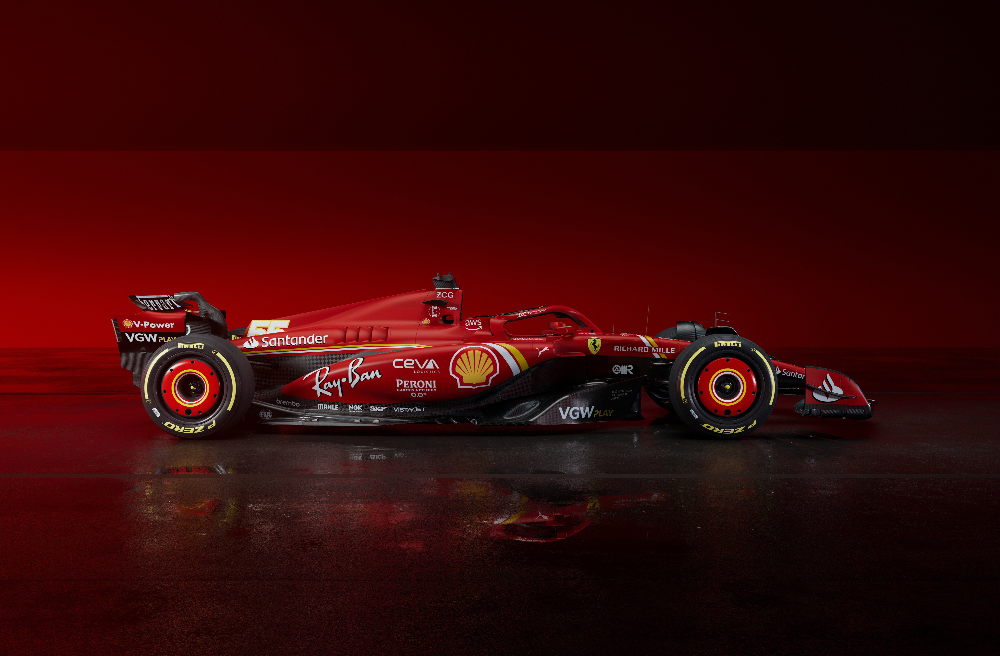
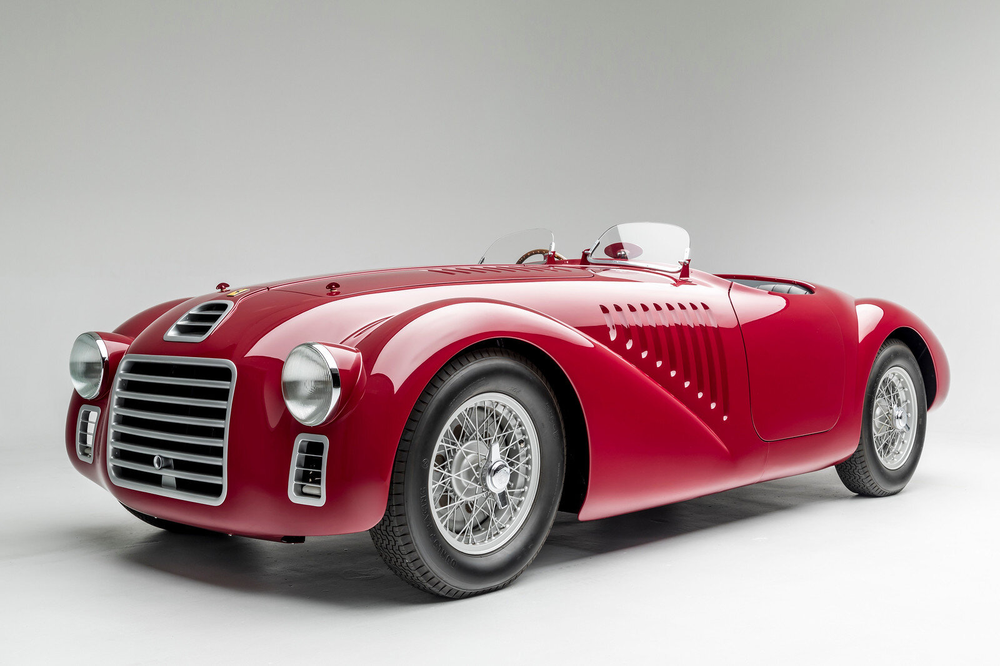

Formule používané Ferrari

SF-24 (aktuálně používaný typ formule)

Ferrari 125 (první typ formule použit v Monaku)

Celý název týmu: Scuderia Ferrari
Sídlo: Maranello, Itálie
Šéf týmu: Frédéric Vasseur
Technický šéf: Enrico Cardile / Enrico Gualtieri
Vyhrané místrovství světa: 16
Nejlepší pozice: 1. (244x)
SF-24 (aktuálně používaný typ formule)
Ferrari 125 (první typ formule použit v Monaku)
První závod se konal v Monaku roku 1950 (Grand Prix Monaka 1950).
V té době Ferrari reprezentoval Alberto Ascari, Luigi Villoresi, Raymond Sommer a Dorino Serafini.
Poslední závod se konal ve městě Jeddah v Saudské Arábii 9.3. 2024.
V Saudské Arábii reprezentoval Charles Leclerc a nováček Oliver Bearman, jakožto náhradník.
V dnešní době reprezentuje Ferrari Charles Leclerc a Carlos Sainz (bude v roce 2025 vyměněn za současného pilota Mercedes-AMG Lewise Hamiltona).
Ferrari v minulosti reprezentovali jedni z nejznámějších jezdců F1 jako je treba Michael Schumacher nebo Niki Lauda.
Ferrari taktéž zůstává jediným týmem, který se účastnil každé sezóny F1 od roku 1950.